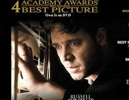

Jackson Cheung
Funyun Enthusiast and Connoisseur
Social media
Travelling the world trying to become a better person. Part of that experience is sharpening my marketable skills. I hope that coding can be an outlet for my creative side. I believe living a healthy and balanced lifestyle is key to sustained wellbeing.
Favorite Movies

- Django Unchained - Two years before the Civil War, Django (Jamie Foxx), a slave, finds himself accompanying an unorthodox German bounty hunter named Dr. King Schultz (Christoph Waltz) on a mission to capture the vicious Brittle brothers. Their mission successful, Schultz frees Django, and together they hunt the South's most-wanted criminals. Their travels take them to the infamous plantation of shady Calvin Candie (Leonardo DiCaprio), where Django's long-lost wife (Kerry Washington) is still a slave.
- Black Mass - While his brother Bill (Benedict Cumberbatch) remains a powerful leader in the Massachusetts Senate, Irish hoodlum James "Whitey" Bulger (Johnny Depp) continues to pursue a life of crime in 1970s Boston. Approached by FBI agent John Connolly (Joel Edgerton), the lawman convinces Whitey to help the agency fight the Italian mob. As their unholy alliance spirals out of control, Bulger increases his power and evades capture to become one of the most dangerous gangsters in U.S. history.

- A Beautiful Mind - A human drama inspired by events in the life of John Forbes Nash Jr., and in part based on the biography "A Beautiful Mind" by Sylvia Nasar. From the heights of notoriety to the depths of depravity, John Forbes Nash Jr. experienced it all. A mathematical genius, he made an astonishing discovery early in his career and stood on the brink of international acclaim. But the handsome and arrogant Nash soon found himself on a painful and harrowing journey of self-discovery.